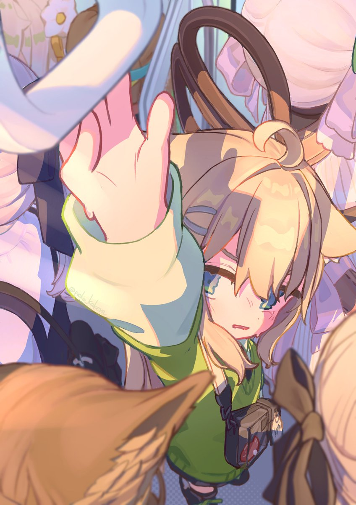

你好，我是 Eason。这里是我的数字花园，用来记录日常、相册、音乐和一些小作品。
喜欢雾蓝色、星辰背景，也喜欢把安静的瞬间慢慢保存下来。
这里记录本站的基本信息，方便查看博客状态。
主题：雾蓝星辰 · 内容：VRChat / 相册 / 音乐 / 日常
欢迎来到我的数字花园。这里会放我的日常、相册、音乐、想法和一些小作品。
你可以在这里查看我的博客文章、相册和音乐，也可以在关于我里找到联系方式。
点击图片会自动定位到对应文章。
已暂停